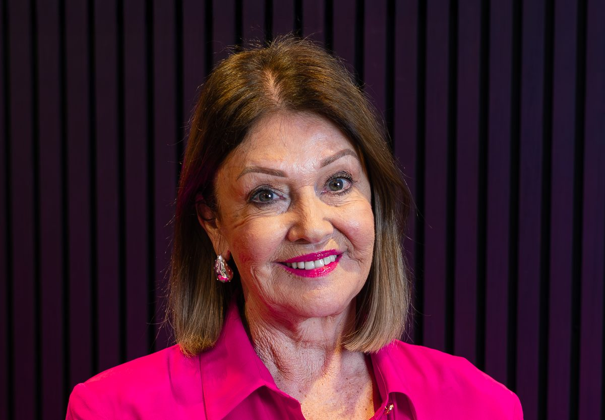

Barque Lord Keane · Capt. John Roberts · London to Port Phillip · 1843
Sarah of Rodborough
A novel by Di Williams
1
Edw'd G. Bucknall
43 · farmer
2
Sarah
36 · his wife — named in her own line
4
Caroline
the one daughter — named, not a bracket
—
— and the sons
Stephen · Henry · Frederick · Edgar · Edward
—
— with them
Samuel & Harriet Martin · Mary Tucker
The colony wrote her name plainly in 1843 — Sarah, thirty-six. The memorial that stands today records only “his wife.” This is her story.
The book
In 1843 Sarah Tucker Bucknall left Stroud in Gloucestershire, sailed four months with her husband and her children, and began again on unbroken country in the Port Phillip District.
She raised eight children and built Rodborough Vale. The colony's own record named her plainly on arrival. The memorial raised in the family's honour, more than a century later, names her only as “his wife.”
Sarah of Rodborough is drawn from surviving family letters, court records and photographs, and follows Sarah across fifty years — England to the colony, the diggings, the drought, and the long distances between a mother and the children the world scattered.
One ship, two families
Edward Bucknall was a townsman taking his family to land he did not yet know how to work — so he brought the knowledge with him. Samuel Martin was hired to teach Edward and his sons to farm, and sailed on the Lord Keane with his wife, Harriett. Two households, side by side in the cabin.
Generations on, the author descends from both of them — Sarah on one line, Harriett on the other. Two great-great-grandmothers, aboard the same ship in 1843.
Two households on one immigration list — the farmer's family, and the man hired to teach them the land. A lifetime later, both are the author's own.
The author

Di Williams is the founder of Fernwood Fitness, the national network of women's health clubs she began with a single gym in Bendigo in 1989 and built into the largest of its kind in Australia. She remains its Chair.
She has written three books on women's leadership, health and strength: Women Fit to Lead, The Women's Club and Smart Women Lift Weights. Her business awards include Telstra Australian Business Woman of the Year, International Business Woman of the Year, and an international lifetime achievement award presented in Singapore.
Sarah of Rodborough is her first novel. It began when she was shown a bundle of family letters and found, among them, a woman who had crossed the world at thirty-six, raised eight children on the Victorian frontier, and been recorded on the family memorial only as “his wife Sara and six children” — misspelled, without her surname, and without her dates. Sarah Tucker Bucknall is her great-great-grandmother. So, as it turned out, is another woman who sailed on the same ship.
The letters this novel is drawn from — around three hundred and fifty of them — are held at the State Library of Victoria, where anyone may read them.
Di grew up in Bendigo, on Dja Dja Wurrung country, not far from the hill where Sarah is buried. She now lives in Melbourne.
A woman named in the ship's register, and left off the memorial raised in her honour.
She boarded the Lord Keane carrying a child. The ship did not wait for land.
A father who chose her husband to settle a debt — and the suitor she refused, and never was forgiven for.
Two families who crossed on the same barque in 1843 — and, a lifetime later, became one.
A girl brought out from Ireland to be sold. She ran — and Sarah hid her.
A jeweller who sailed as a farmer, toward a life he did not yet know how to live.
Eight children, a goldfield, a drought, and the long distances between a mother and the world that scattered them.